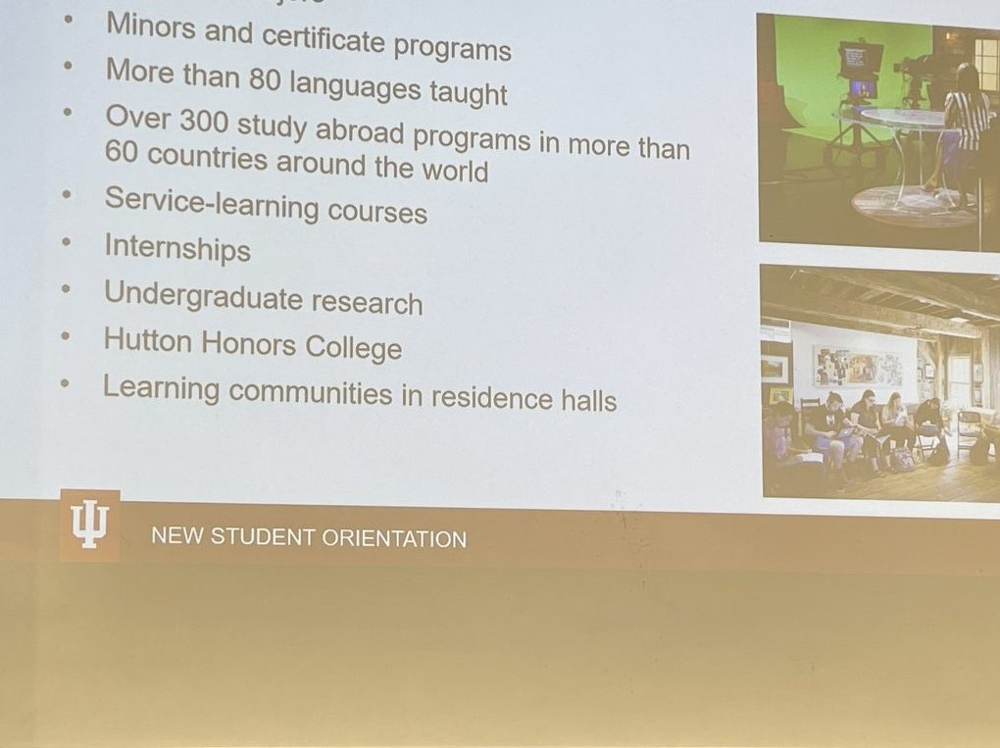

classroom home · jadexzhao · sunrise · @zhao.langxi
Jade Zhao · public prints · follow the steps
footprint
A short trail of where I am and where I’ve been. Digital prints plus the IU path. Fun for high schoolers. Ships and resume detail live on jadexzhao (sunrise).
-
Step 1
Twin sites
Two sites, same me. jadexzhao = sunrise (builder · code · career). This site, matchaxmoxie, = sunset (classroom archive · Miss Zhao).
-
Step 2
Instagram · @zhao.langxi
School day face: @zhao.langxi. That is my real name (Zhao / 赵朗曦), not a secret account. jadexzhao is GitHub / code only · never an Instagram handle.
-
Step 3
IU Luddy · Informatics · Class of 2027
Indiana University’s Luddy School (Informatics, Computing, and Engineering). Major: Informatics. Aiming for May 2027. Plain guide for early starters: Informatics Class of 2027.
-
Step 4
Madrid · Spring 2026
Study abroad semester at Universidad Complutense de Madrid (Complutense · a big public university in Madrid). Path notes: junior · Madrid.

IU study abroad orientation slide · Madrid was my Spring 2026 stop. -
Step 5
ServeIT · ServeAI
ServeIT is IU’s nonprofit tech clinic: students build sites and data tools for community partners. ServeAI is the clinic’s public-interest AI track on the same roster. Ships live on the sunrise briefcase: jadexzhao · recruiter path.

Campus opportunities map · ServeIT sits on the ship side of that story. -
Step 6
GWC · Miss Zhao (on hiatus)
GWC = Girls Who Code. Roots in Girls Who Code Indianapolis. Miss Zhao is on hiatus for senior year so I can finish IU. The teaching archive stays open on this site.
-
Step 7
Scratch studio
Tiny games and how-tos you can rebuild from steps. Scratch studio · optional craft stop on the classroom trail.
-
Step 8
Four-year path · IU guide · Year ’23
Course names + terms (no letter grades on these pages): freshman · sophomore · junior · Madrid · senior. Plain map: IU Informatics guide. Packing and dorm vibes are Archival · Year ’23 (2023) on campus survival. Verify FA26 to FA27 (Fall 2026 to Fall 2027) on live IU pages.

Orientation welcome · Year ’23 archive vibe, not current calendar advice. -
Step 9
External prints · LinkedIn · GitHub
Resume scan: LinkedIn. Code: GitHub @jadexzhao (sunrise) and @matchaxmoxie (sunset classroom).